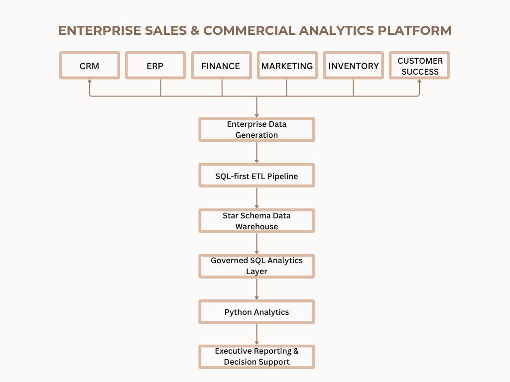

01
Revenue & Gross Profit
Monthly revenue and gross profit performance across the reporting period.
An end-to-end analytics platform that brings sales, finance, marketing, inventory, and customer data into one reporting layer for commercial performance analysis and decision support.

Commercial data often sits across separate systems for sales, finance, marketing, inventory, and customer operations.
When each function calculates and reports metrics independently, the same KPI can have different definitions, cross-functional reporting requires manual reconciliation, and decision-makers are left without a consistent view of business performance.
This project explores how those separate data sources can be brought into a governed analytical structure that supports consistent reporting across the business.
How can commercial data across multiple business functions be brought together to create a consistent view of performance, identify areas that need attention, and support better business decisions?
The platform is designed to give commercial teams a shared view of revenue, profitability, pipeline health, customer performance, inventory risk, and demand.
Instead of reviewing each area separately, the reporting layer brings these measures together so performance issues can be identified, compared, and followed up from one consistent analytical view.
The project uses synthetically generated enterprise data structured around the main commercial functions represented in the platform. Before analysis, the data moves through a SQL-first ETL process that checks quality, standardizes records, and loads validated data into a star-schema warehouse.
Bring source data into a controlled staging layer.
Check data quality and flag issues before loading.
Move validated data into the star-schema warehouse.
Keep a record of validation results across each run.
The analysis moves from overall commercial performance and pipeline health to territory performance, customer behaviour, revenue risk, and demand planning.
Monthly revenue and gross profit performance across the reporting period.
Opportunity value across the different stages of the sales pipeline.
Revenue contribution across the enterprise sales territories.
Customer groups based on purchasing behaviour and lifetime value.
Revenue exposure across customer segments and retention-risk levels.
Historical demand compared with the Holt-Winters forecast.


Revenue increased from $298.8M in FY2022 to $312.5M in FY2024, although the year-over-year trend weakened in 2024.
Pipeline coverage stands at 0.38×, making stronger opportunity generation and conversion important for supporting future revenue growth.
Results differ across representatives and territories, creating opportunities for more targeted coaching and performance management.
RFM analysis identified Champions, Loyal Customers, Emerging Customers, and At-Risk Customers, providing a clearer basis for differentiated customer strategies.
The SMB segment represents the largest share of potential revenue at risk, making it the strongest priority for proactive retention.
The Holt-Winters model achieved a 1.06% holdout MAPE, while the ERP forecasting process averaged 87.46% forecast accuracy.
Increase qualified opportunity generation and focus on conversion through the active pipeline to improve the current 0.38× coverage.
Prioritize high-value and critical accounts, particularly within the SMB segment, where the analysis shows the largest potential revenue exposure.
Use differences across representatives and territories to identify where coaching, resource allocation, or successful sales practices could improve performance.
Treat Champions, Loyal, Emerging, and At-Risk customers differently across sales, marketing, and customer-success activity rather than applying the same approach to every account.
Use the short-term demand forecast alongside inventory and supplier information to support replenishment planning and reduce stockout exposure.
The platform covers the full analytical workflow from data preparation and warehousing through customer analytics, forecasting, and reporting. The following boundaries should be considered when interpreting the results.
The data was generated for the project, so the findings reflect the analytical scenario rather than the performance of a real company.
SQLite supports the warehouse and analysis used here, but a production implementation would require a more scalable data platform.
Customer risk is based on defined behavioural and service indicators rather than a predictive model trained on historical churn outcomes.